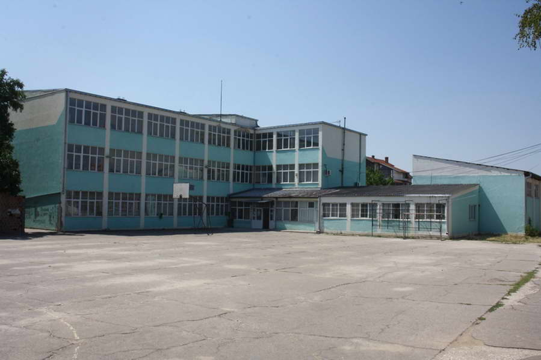

Education
2022-
First year student at the Faculty of Information Sciences and Computer Engineering FINKI, UKIM Skopje Major: Software engineering and information systems
2018-2022
Completed secondary vocational education
Gjorce Petrov Secondary School in Prilep Major: Pharmacy Technician (average: 5.0)
Through four years of education, I acquired knowledge in general education, professional subjects and practical skills. After finishing school, I have the opportunity to work as a pharmaceutical technician in a pharmacy, laboratory or to continue my education at one of the faculties. Practical teaching begins in the second year. It is performed in a laboratory and in cabinets that are equipped with the necessary instruments and devices. As part of the laboratory, there is also an improvised pharmacy, with the help of which I got acquainted with the medicines that I study in the theoretical classes. In the fourth year, I also attended practical classes in some of the private pharmacies. Through the practical teaching, I acquired the following knowledge:

- Working with laboratory equipment
- Preparation of reagents, solutions
- Searching and using pharmacopoeias
- Identification, determination of purity of compounds, as well as their application
- Production of main preparations for external use
- Microscopic and macroscopic identification of drugs, etc.
Primary School
The primary municipal school "Kliment Ohridski" (average: 5.0)
In primary school, I was a curious and enthusiastic kid, eager to learn and explore the world around me. I remember the excitement of stepping into the classroom each morning, ready to embark on new adventures of knowledge. I had a genuine thirst for knowledge and loved engaging in class discussions, asking questions, and participating in various activities. Whether it was solving math problems, delving into fascinating science experiments, or unraveling the mysteries of history, I approached each subject with a sense of wonder and eagerness.My favourite subjects were Sports and Math ,i was so good at both of them. In sports, I thrived on the thrill of competition and the joy of physical activity. Whether it was running, jumping, or playing team games, I excelled in various sports and always gave my best effort. Outside the classroom, recess was always a thrilling time. I would join my friends in energetic games of tag, racing across the playground with laughter and joy, it was the best.  Being a part of a close-knit community, I formed lasting friendships with my classmates. We shared secrets, exchanged stories, and supported each other through both triumphs and challenges.